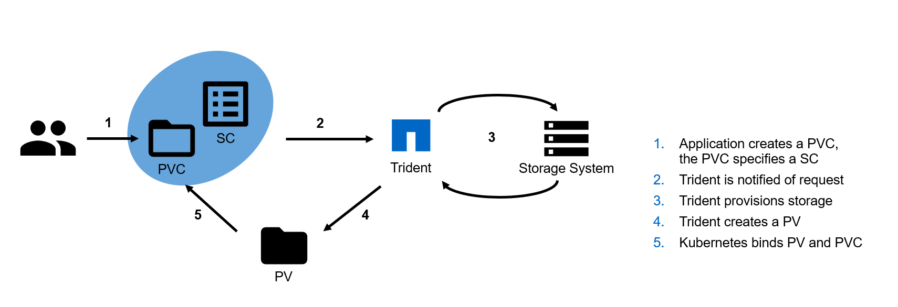

Trident
Kubernetes introduces several new concepts that storage, application, and platform administrators should understand. It is essential to evaluate the capability of each within the context of their use case. These concepts are discussed below and will be encountered throughout the document.
The Kubernetes storage paradigm includes several entities which are important to each stage of requesting, consuming, and managing storage for containerized applications. At a high level, Kubernetes uses the three types of objects for storage described below:
Persistent Volume Claims (PVCs) are used by applications to request access to storage resources. At a minimum, this includes two key characteristics, Size and Access mode. Storage Class is optional:
Size – The capacity desired by an application component
Access mode – The rules for accessing the storage volume. The PVC can use one of three access modes:
Read Write Once (RWO) – Only one node is allowed to have read write access to the storage volume at a time.
Read Only Many (ROX) – Many nodes may access the storage volume in read-only mode
Read Write Many (RWX) – Many nodes may simultaneously read and write to the storage volume
Storage Class (optional) - Identifies which Storage Class to request for this PVC. See below for Storage Class information.
More information about PVCs can be found in the Kubernetes PVC or OpenShift PVC documentation.
Persistent Volumes (PVs) are Kubernetes objects that describe how to connect to a storage device. Kubernetes supports many different types of storage. However, this document covers only NFS and iSCSI devices since NetApp platforms and services support those protocols. At a minimum, the PV must contain these parameters:
Capacity - The size of the volume represented by the object, e.g. “5Gi”
Access mode - This is the same as for PVCs but can be dependent on the protocol used as shown below:
Read Write Once (RWO) - Supported by all PVs
Read Only Many (ROX) - Supported primarily by file and file-like protocols, e.g. NFS and CephFS. However, some block protocols are supported, such as iSCSI
Read Write Many (RWX) - Supported by file and file-like protocols such as NFS and also supported by iSCSI raw block devices
Protocol - Type of protocol (e.g. “iSCSI” or “NFS”) to use and additional information needed to access the storage. For example, an NFS PV will need the NFS server and a mount path.
Reclaim policy - It describes the Kubernetes action when the PV is released. Three reclaim policy options are available:
Retain - Mark the volume as waiting for administrator action. The volume cannot be reissued to another PVC.
Recycle - Kubernetes will connect the volume to a temporary pod and issue a rm -rf command to clear the data after the volume is released. For our interests, this is only supported by NFS volumes.
rm -rf
Delete - Kubernetes will delete the PV when it is released. However, Kubernetes does not delete the storage which was referenced by the PV. A storage administrator will need to delete the volume on the backend.
More information about PVs can be found in the Kubernetes PV or OpenShift PV documentation.
Kubernetes uses the Storage Class object to describe storage with specific characteristics. An administrator may define several Storage Classes that each define different storage properties. The Storage Classes are used by the PVC to provision storage. A Storage Class may have a provisioner associated with it that will trigger Kubernetes to wait for the volume to be provisioned by the specified provider. In the case of Trident, the provisioner identifier used is netapp.io/trident. The value of the provisioner for Trident using its enhanced CSI provisioner is csi.trident.netapp.io.
netapp.io/trident
csi.trident.netapp.io
A Storage Class object in Kubernetes has only two required fields:
Name - It uniquely identifies the Storage Class from the PVC
Provisioner - Identifies which plug-in to use to provision the volume. A full list of provisioners can be found in the documentation
The provisioner used may require additional attributes which will be specific to the provisioner used. Additionally, the Storage Class may have a reclaim policy and mount options specified which will be applied to all volumes created for that storage class.
More information about storage classes can be found in the Kubernetes or OpenShift documentation.
In addition to the basic Kubernetes storage concepts described above, it’s important to understand the Kubernetes compute objects involved in the consumption of storage resources. This section discusses the Kubernetes compute objects.
Kubernetes, as a container orchestrator, dynamically assigns containerized workloads to cluster members according to any resource requirements that may have been expressed. For more information about what containers are, see the Docker documentation.
A pod represents one or more containers which are related to each other and is the smallest (atomic) unit for Kubernetes. Containers which are members of the same pod are co-scheduled to the same node in the cluster. They typically share the same namespace, network, and storage resources. Though not every container in the pod may access the storage or be publicly accessible via the network.
A Kubernetes service adds an abstraction layer over pods. It typically acts as an internal load balancer for replicated pods. The service enables the scaling of pods while maintaining a consistent service IP address. There are several types of services, a service can be reachable only within the cluster by declaring it of type ClusterIP, or may be exposed to the outside world by declaring it of type NodePort, LoadBalancer, or ExternalName.
A Kubernetes deployment is one or more pods which are related to each other and often represent a “service” to a larger application being deployed. The application administrator uses deployments to declare the state of their application component and requests that Kubernetes ensure that the state is implemented at all times. This can include several options:
Pods which should be deployed, including versions, storage, network, and other resource requests
Number of replicas of each pod instance
The application administrator then uses the deployment as the interface for managing the application. For example, by increasing or decreasing the number of replicas desired the application can be horizontally scaled in or out. Updating the deployment with a new version of the application pod(s) will trigger Kubernetes to remove existing instances and redeploy using the new version. Conversely, rolling back to a previous version of the deployment will cause Kubernetes to revert the pods to the previously specified version and configuration.
Deployments specify how to scale pods. When a webserver (which is managed as a Kubernetes deployment) is scaled up, Kubernetes will add more instances of that pod to reach the desired count. However, when a PVC is added to a deployment, the PVC is shared by all pod replicas. What if each pod needs unique persistent storage?
StatefulSets are a special type of deployment where separate persistent storage is requested along with each replica of the pod(s) so that each pod receives its own volume of storage. To accomplish this, the StatefulSet definition includes a template PVC which is used to request additional storage resources as the application is scaled out. This is generally used for stateful applications such as databases.
In order to accomplish the above, StatefulSets provide unique pod names and network identifiers that are persistent across pod restarts. They also allow ordered operations, including startup, scale-up, upgrades, and deletion.
As the number of pod replicas increase, the number of PVCs does as well. However, scaling down the application will not result in the PVCs being destroyed, as Kubernetes relies on the application administrator to clean up the PVCs in order to prevent inadvertent data loss.
When an application submits a PVC requesting storage, the Kubernetes engine will assign a PV which matches the requirement. If no PV exists which can meet the request expressed in the PVC, then it will wait until a provisioner creates a PV which matches the request before making the assignment. If no storage class was assigned, then the Kubernetes administrator would be expected to request a storage resource and introduce a PV.

Kubernetes dynamic storage provisioning process¶
The storage is not connected to a Kubernetes node within a cluster until the pod has been scheduled. At that time, kubelet, the agent running on each node that is responsible for managing container instances, mounts the storage to the host according to the information in the PV. When the container(s) in the pod are instantiated on the host, kubelet mounts the storage devices into the container.
kubelet
It’s important to understand that Kubernetes creates and destroys pods (workloads), it does not “move” them like live VM migration performed by hypervisors. When Kubernetes scales down or needs to re-deploy a workload on a different host, the pod and the container(s) on the original host are stopped, destroyed, and the resources unmounted. The standard mount and instantiate process is then followed wherever in the cluster the same workload is re-deployed as a different pod with a different name, IP address, etc.(Note: Stateful sets are an exception and can re-deploy a pod with the same name). When an application being deployed relies on persistent storage, that storage must be accessible from any Kubernetes node deploying the workload within the cluster. Without a shared storage system available for persistence, the data would be abandoned, and usually deleted, on the source system when the workload is re-deployed elsewhere in the cluster.
To maintain a persistent pod that will always be deployed on the same node with the same name and characteristics, a StatefulSet must be used as described above.
The Cloud Native Computing Foundation (CNCF) is actively working on a standardized Container Storage Interface (CSI). NetApp is active in the CSI Special Interest Group (SIG). CSI is meant to be a standard mechanism used by various container orchestrators to expose storage systems to containers. Trident fully conforms with CSI v1.2 specifications and supports all volume operations. Trident’s enhanced CSI support is production ready and currently supported on Kubernetes versions 1.13 and above.
1.13